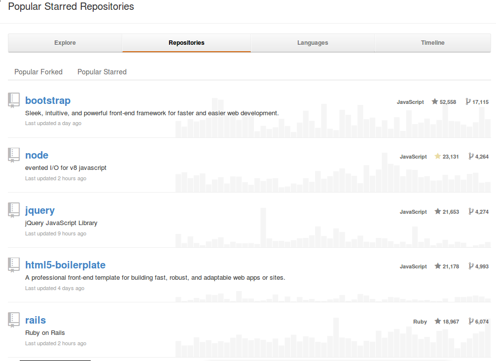
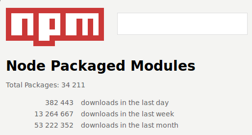

理解Node.js
唐新发
2013-07-12
理解Node.js
1 Javascript简介
web浏览器上的唯一语言
批着c外衣的lisp
被误解最多的语言
<button onClick='alert("Hello Javascript");'>Click Me</button>
2 Javascript诞生
1995年，Netscape（网景）打算在浏览器（Netscape Navigator 2.0）中嵌入Scheme，招募来Brendan Eich（布兰登·艾奇），事情很快变成在浏览器中嵌入一种像Java的脚本语言，Brendan Eich在10天的时间里写出了JavaScript的雏形Mocha（摩卡），Mocha也被用于嵌入Netscape的服务器产品LiveWire，为了便于市场营销Mocha改名为LiveScript，1995年底Netscape和Sun商谈后终将LiveScript更名为JavaScript。
3 Javascript扩张
JavaScript 1.0随Netscape Navigator 2.0发行并取得了成功，随后Netscape在Netscape Navigator 3.0中发布了JavaScript 1.1版，这个时候微软决定进军浏览器，发布了IE 3.0并搭载了一个JavaScript的克隆版，叫做JScript。
1997年，JavaScript 1.1作为一个草案提交给欧洲计算机制造商协会（ECMA），完成了标准化（ECMA-262标准，ECMAScript脚本语言）。
后来Netscape在浏览器大战中不敌微软，LiveWire服务器产品也跟着失败了，服务器端JavaScript消失了。
4 Javascript统治

Javascript驱动Web
5 Javascript标准：ECMAScript
ECMAScript 描述了以下内容：
- 语法
- 类型
- 语句
- 关键字
- 保留字
- 运算符
- 对象
6 Javascript的组成
一个完整的 JavaScript 实现是由以下 3 个不同部分组成的：
- 核心（ECMAScript）
- 文档对象模型（DOM）
- 浏览器对象模型（BOM）
7 Javascript特点
函数式
原型继承
弱类型
词法作用域
8 Javascript特性：“类”
Javascript是
基于原型
面向对象语言
没有“类”概念
原型＋构造函数＋new关键字＝类
9 Javascript特性：“类”（示例）
1: function Man(name, age) { 2: this.name = name; 3: this.age = age; 4: } 5: Man.prototype.introduce = function(){ 6: return this.name + " is " + this.age; 7: }; 8: 9: var man1 = new Man("jack", 24); 10: var man2 = new Man("tom", 25); 11: console.log(man1.introduce()); 12: console.log(man2.introduce());
jack is 24 tom is 25
10 Javascript特性：闭包
闭包是
代码块（通常是函数）
和
创建该代码块的上下文中数据
的结合。
表现为
函数可以访问外部作用域定义的变量
即使外部作用域已经退出
11 Javascript特性：闭包（示例）
1: function Woman(name, age) { 2: this.name = name; 3: this.introduce = function(){ 4: return this.name + " is " + (age - 10); 5: }; 6: } 7: var woman1 = new Woman("mary", 34); 8: var woman2 = new Woman("rose", 45); 9: console.log(woman1.introduce()); 10: console.log(woman2.introduce());
mary is 24 rose is 35
12 常见的Web后端开发技术

Perl

Php

Python

Ruby


13 今天要介绍的Web后端开发技术

14 Node.js简介
Node.js是在Chrome的Javascript引擎之上构建的一个平台，
很容易用来构建 高性能 、 可扩展 的网络应用程序。
Node.js是 单线程 基于 事件驱动 、 非阻塞I/O模型 从而表现得轻巧、高效，
适用于开发 数据密集型 的 实时响应 分布式应用程序。
15 Node.js简介
Node.js 不是
像php、python、perl、ruby这样的
语言
像CakePHP、Django、Rails这样的服务器端框架
像JQuery、ExtJS、Backbone.js这样的浏览器端库
16 Node.js现状
活跃的社区

丰富的模块

17 Node.js用户案例
在服务端
我们的整个移动软件栈完全使用Node构建
第一个原因是可扩展
第二个原因是性能上的巨大提升
Node.js的优势在于：
- 更好的性能以及更少的内存占用，在某型情景下性能提升20倍
- 程序员可以充分发挥他们JavaScript的技巧
- 前端与后端开发人员可以在一个小组内协作
- 服务器从30台减少到只有3台，硬件资源利用率提升10倍，并且还有提升的空间。
- 开发工作可以更加专注在应用开发，而不是到处去救火
18 Node.js安装
- /usr/local/bin/node
- 主程序
- /usr/local/bin/npm
- 模块管理程序
- /usr/local/lib/node_modules
- 全局模块目录
wget http://nodejs.org/dist/v0.10.12/node-v0.10.12.tar.gz tar xzf node-v0.10.12.tar.gz ./configure make sudo make install
~$ node -e 'console.log("hello node.js");'
hello node.js
19 Node.js模块机制
JavaScript没有模块系统
所有js文件中定义的顶级对象名存在于同一个命名空间
- CommonJS规范
- 其目标是为了构建JavaScript在包括Web服务器，桌面，命令行工具，及浏览器方面的生态系统。
+-------------+ | module.js --+->模块是普通的js文件 | | | +---------+ | | | require +-+->用于导入其它模块接口的函数 | +---------+ | | +---------+ | | | exports +-+->用于导出接口的对象 | +---------+ | | +---------+ | | | module +-+->当前模块对象 | +---------+ | | ... ----+->其它用户定义对象为模块私有 +-------------+
在Node.js应用程序中
首次require一个模块执行其代码
返回其exports对象
该exports对象会被Node.js缓存
当再次require该模块直接返回缓存结果
exports变量是module.exports对象的引用
该模块不会对全局命名空间造成影响
20 Node.js模块示例
woman.js
1: var value = 10; 2: exports.Woman = function (name, age) { 3: this.name = name; 4: this.introduce = function(){ 5: return this.name + " is " + (age - value); 6: }; 7: };
1: var Woman = require("./woman.js").Woman; 2: var woman1 = new Woman("mary", 34); 3: var woman2 = new Woman("rose", 45); 4: console.log(woman1.introduce()); 5: console.log(woman2.introduce());
21 Node.js模块示例（类即模块）
woman.js
1: var value = 10; 2: module.exports = function (name, age) { 3: this.name = name; 4: this.introduce = function(){ 5: return this.name + " is " + (age - value); 6: }; 7: };
1: var Woman = require("./woman.js"); 2: var woman1 = new Woman("mary", 34); 3: var woman2 = new Woman("rose", 45); 4: console.log(woman1.introduce()); 5: console.log(woman2.introduce());
22 Node.js包机制
JavaScript没有包管理系统
不能自动加载和安装依赖
不利于开发大规模应用
- CommonJS包规范
- 存在package.json文件的目录即为包
1: { 2: "author": { 3: "name": "Isaac Z. Schlueter", 4: "email": "i@izs.me", 5: "url": "http://blog.izs.me/" 6: }, 7: "name": "tar", 8: "description": "tar for node", 9: "version": "0.1.17", 10: "repository": { 11: "type": "git", 12: "url": "git://github.com/isaacs/node-tar.git" 13: }, 14: "main": "tar.js", 15: "scripts": { 16: "test": "tap test/*.js" 17: }, 18: "dependencies": { 19: "inherits": "1.x", 20: "block-stream": "*", 21: "fstream": "~0.1.8" 22: }, 23: "devDependencies": { 24: "tap": "0.x", 25: "rimraf": "1.x" 26: }, 27: "license": "BSD", 28: "readme": "...", 29: "readmeFilename": "README.md", 30: "_id": "tar@0.1.17", 31: "dist": { 32: "shasum": "408c8a95deb8e78a65b59b1a51a333183a32badc" 33: }, 34: "_from": "tar@0.1.17", 35: "_resolved": "https://registry.npmjs.org/tar/-/tar-0.1.17.tgz" 36: }
23 Node.js包管理工具

npm install <name>- 安装包到本地模块目录（./node_modules）
npm install -g <name>- 安装包到全局模块目录（/usr/local/lib/node_modules）
npm link- 将当前包链接全局模块目录下
npm link <name>- 将全局包链接本地模块目录下
全局模块目录不在Node.js的模块搜索范围内
将全局安装的包链接到本地模块目录即可
24 Node.js模块定位
require(X)如何定位到模块文件？
- require("fs")
直接加载核心模块
- require("./X")
- require("../X")
- require("/X")
指定路径加载模块
- require("X")
搜索路径加载模块
- 指定路径加载模块
- 指定路径下X文件
- 指定路径下X.js文件
- 指定路径下X.node文件
- 指定路径下X/package.json文件中的main对应的文件
- 指定路径下X/index.js
- 指定路径下X/index.node
- 搜索路径加载模块
依次尝试以下路径进行模块加载
- 当前目录下的node_modules目录
- 上一级目录下的node_modules目录，直到根目录为止
- NODE_PATH环境变量指定的各个路径
- 用户根目录下的.node_modules目录
- 用户根目录下的.node_libraries目录
- node.js安装目录前缀下的/lib/node
通常为：/usr/local/lib/node
25 Node.js示例：Echo服务器
echo_server.js
讲解
1: var net = require('net'); 2: 3: var server = net.createServer( 4: function (socket) { 5: socket.pipe(socket); 6: } 7: ); 8: 9: server.listen(8001); 10: console.log("Server running");
~$ node ./echo_server.js Server running
~$ telnet 127.0.0.1 8001 hello hello
在Node.js中，除了代码，一切都是并行的！
现在我们来逐行解释发生了什么：
node ./echo_server.js
node.js解释执行echo_server.js，
然后进入事件循环，
如果没有事件需要处理则退出程序。
var net = require('net');
导入 net 模块，它是node.js自带的核心模块，对异步网络进行了封装。
net模块的js代码将被执行，返回该模块导出的一些函数及“类”。
1: var server = net.createServer( 2: function (socket) { 3: socket.pipe(socket); 4: } 5: );
1 net.createServer创建一个tcp服务器对象，参数为绑定到服务器 connection 事件的回调函数，当node.js成功接收到一个连接时，该回调函数将被调用。
2 该回调函数的参数为新建立的tcp连接对象，它是一个 net.Socket 类实例，
3 echo的实现使用了Socket.pipe方法，该方法来自Socket的父类，将当前对象读取到的数据转发到参数指定的目标对象。
server.listen(8001);
tcp服务器在绑定在8001端口进行监听，这里省略了第二个参数
host（其默认值为INADDR_ANY），第三个参数backlog(其默认值为511)，第四个数callback， net.Server的listen方法也是非阻塞的，绑定成功会调用回调函数callback，失败会发出error事件，这里为了示例的简单性没有进行错误处理。
console.log("Server running");
node.js引入了浏览器端JavasSript常见的一些功能。
如：console对象，用于输出日志；setTimeout函数，用于延迟执行。
但浏览器上特有东西在node.js中是不存在的，如：window全局对象的，在node.js中对应的是
process全局对象。
接下来就由node.js的事件循环接管了，应用程序的逻辑会在事件回调中得以执行。
26 Node.js程序运行得非常快
| I/O | CPU Cycle | Type |
|---|---|---|
| L1-cache | 3 | |
| L2-cache | 14 | Non-blocking |
| RAM | 250 | |
| Disk | 41000000 | Blocking |
| Network | 240000000 |
Node.js是一个全新的开发平台
所有会阻塞的api都以异步回调的方式进行封装
27 Node.js构建Http服务
web_server.js
讲解
1: var http = require("http"); 2: 3: var server = http.createServer( function(req, res) { 4: res.writeHead(200, {'Content-Type': 'text/plain'}); 5: res.end("hello node.js\n"); 6: }); 7: 8: server.listen(8002);
1: ~$ curl -i http://localhost:8002 2: HTTP/1.1 200 OK 3: Content-Type: text/plain 4: Date: Fri, 12 Jul 2013 08:28:42 GMT 5: Connection: keep-alive 6: Transfer-Encoding: chunked 7: 8: hello node.js
使用node.js写HTTP Web服务与之前写的TCP Echo服务形式上非常相近。
var http = require("http");
导入
http模块。
http模块封装了HTTP相关功能，包括HTTP服务器与HTTP客户端。
1: var server = http.createServer( function(req, res) { 2: res.writeHead(200, {'Content-Type': 'text/plain'}); 3: res.end("hello node.js\n"); 4: });
1 调用 http.createServer 创建 http.Server 对象，参数为回调函数，当web服务器收到请求时调用该回调函数，回调函数接受两个参数：req（请求对象）、res（响应对象）。
2 发送HTTP响应状态码及消息头到客户端。
3 发送响应内容并结束当前请求。由于持久连接的存在，同一连接上可能存在多个请求-响应， =end= 用于指示当前请求已处理完毕。
res.end("hello node.js\n");
等同于
res.write("hello node.js\n");
res.end();
在客户端收到的响应中，有以下非预期的消息头出现：
1: Date: Fri, 12 Jul 2013 08:28:42 GMT 2: Connection: keep-alive 3: Transfer-Encoding: chunked
这是node.js的默认设置，通过启用持久连接和流式数据传输，可以减少客户端连接和对响应数据的缓存，性能进一步提升。
hack一下消除以上非预期的消息头：
var server = http.createServer( function(req, res) { res.sendDate = false; res.shouldKeepAlive = false; res.useChunkedEncodingByDefault = false; res.writeHead(200, {'Content-Type': 'text/plain'}); res.end("hello node.js\n"); });
~$ curl -i http://localhost:8002 HTTP/1.1 200 OK Content-Type: text/plain Connection: close hello node.js